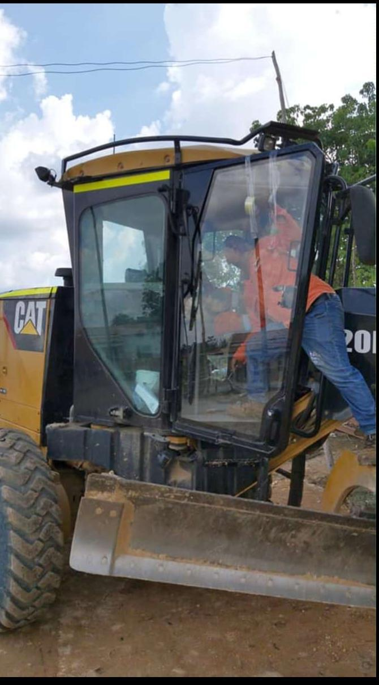

Fabricación de vidrio para maquinaria amarilla

Fabricación de vidrio para maquinaria amarilla
La maquinaria amarilla trabaja en condiciones exigentes y requiere componentes que ofrezcan seguridad, resistencia y precisión. En Parabrisas Cauchos Naranjal fabricamos e instalamos cristales para excavadoras, retroexcavadoras, cargadores, motoniveladoras y otros equipos de construcción, adaptándonos a las especificaciones de cada máquina.
Gracias a nuestra experiencia y capacidad técnica, desarrollamos soluciones personalizadas cuando el cristal original no está disponible o representa un alto costo, garantizando un resultado confiable y de larga duración.
- Fabricación personalizada
- Vidrios templados y laminados
- Atención para maquinaria de construcción
- Soluciones a medida para cada equipo
Soluciones que ofrecemos para maquinaria amarilla
Fabricamos e instalamos cristales templados y laminados para maquinaria amarilla, desarrollando soluciones a medida que garantizan un ajuste preciso, resistencia y seguridad para equipos de construcción, minería e industria.
Fabricación de Cristales
Desarrollamos cristales personalizados según las medidas y especificaciones de cada maquinaria.
Instalación Especializada
Realizamos la instalación garantizando un ajuste seguro y un excelente acabado.
Vidrios Templados y Laminados
Fabricamos con materiales de alta resistencia para entornos de trabajo exigentes.
Asesoría Técnica
Analizamos cada proyecto para ofrecer la solución más adecuada según el equipo y su aplicación.
¿Por qué elegirnos?
Fabricación personalizada
Adaptamos cada cristal a las medidas y características específicas de la maquinaria.
Seguridad y resistencia
Utilizamos vidrios adecuados para las condiciones exigentes de construcción e industria.
Asesoría especializada
Analizamos las necesidades de cada equipo para ofrecer una solución adecuada y confiable.